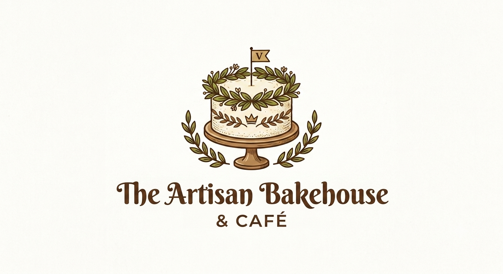
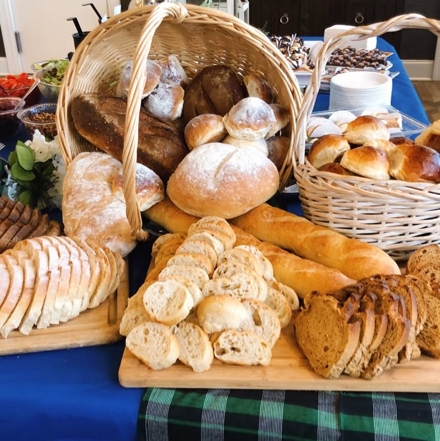
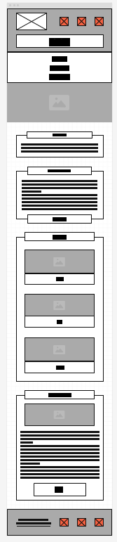
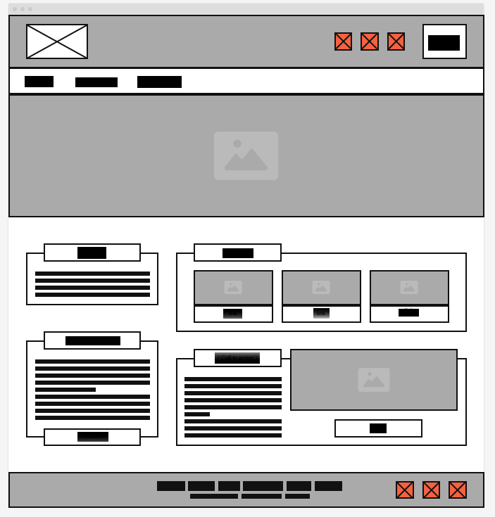

Overview
Site Name
The Artisan Bakehouse & Café
This name was selected because it conveys traditional, handcrafted baking methods while establishing a warm,
welcoming cafe environment. It emphasizes local quality, fresh ingredients, and artisanal craft.
Site Purpose
The site serves as a responsive digital storefront and interactive catalog for the bakery. It allows customers to view active business hours, location details, browse a dynamic filtered menu of fresh goods, save favorite items, and submit online catering requests.
Target Audience & Scenarios
Audience: Local community members, coffee enthusiasts, and event planners looking for fresh pastries, daily breads, or custom catering options.
- Scenario 1: "What seasonal specialty pastries or drinks are available today, and what are the bakery's morning operating hours?"
- Scenario 2: "Can I filter the menu for specific bread options, check ingredient/dietary details, and order a catering platter for an upcoming event?"
Branding & Style Guide
Website Logo

Color Palette
Palette URL: https://coolors.co/4a2e1b-8c5a3c-d9a05b-f7f3e9
| Primary (Crust Dark) | Secondary (Warm Warmth) | Accent (Golden Wheat) | Background (Flour Cream) |
|---|---|---|---|
| #4A2E1B | #8C5A3C | #D9A05B | #F7F3E9 |
Typography
Heading Font: Libre Bodoni
Chosen for its elegant, classical serifs that communicate traditional craft and quality bakery heritage.
Body Font: Roboto
Chosen for clean readability, high legibility on mobile screens, and smooth modern interface display.
Sample Styling
This is a standard body text paragraph demonstrating font legibility for menu descriptions and general bakery details.
This is a highlighted alert paragraph showing how secondary colors accent special seasonal promotions.
Site Architecture
Navigation
Site Map
Content Plan
1. Home Page
Contains a welcoming hero banner highlighting daily specials, business operating hours, physical shop address, and quick links to featured items populated dynamically.
Images:

2. Menu Page
Features an interactive product catalog driven by dynamic data. Users can filter items by category (Breads, Pastries, Coffee/Drinks), open detail modal popups for dietary/ingredient notes, and save favorite selections to browser local storage.
Images:

3. Catering & Contact Page
An accessible form with client-side validation allowing users to request custom catering orders, inquire about dietary accommodations, or submit direct feedback.
Images:

Wireframes
Layout sketches illustrating mobile and desktop viewport arrangements for core site views.
Mobile View (Small Viewport)
Single-column layout featuring a hamburger navigation toggle and stacked menu cards.

Desktop View (Large Viewport)
Multi-column layout with fixed header navigation, side-by-side catalog grids, and expanded modal views.
